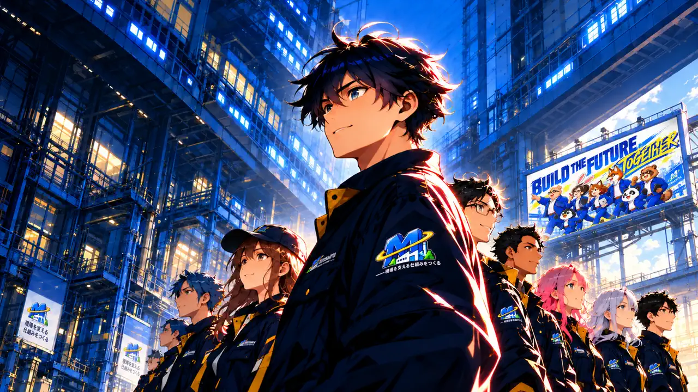

MIKOSHIYAの強み
OUR STRENGTH01 / FIELD
現場を知る。
現場の流れ・困りごとを理解して仕組みに落とし込む。
02 / AI
AIを使い切る。
AIを道具として使い、業務に合う形へつなげる。
03 / SYSTEM
専用につくる。
現場に合わせた仕組みを、使われる形で設計する。

01 / FIELD
現場の流れ・困りごとを理解して仕組みに落とし込む。
02 / AI
AIを道具として使い、業務に合う形へつなげる。
03 / SYSTEM
現場に合わせた仕組みを、使われる形で設計する。